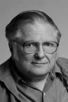

|  |
1989 год William Kahan (1933) «За его фундаментальный вклад в численный анализ. Один из первых экспертов в вычислениях с плавающей запятой. Kahan также посвятил себя задаче “сделать мир безопасным для численных расчётов”» |
Страна: Канада
Образование: Доктор философии в области математики, Университет Торонто, 1958
О лауреате
Kahan учился в университете Торонто, где учился программировать и получил летом 1953 степень бакалавра по математической специальности.
Университет Торонто был центром разработки и использования компьютерной техники того времени, а также владел FERUT – одним из первых в мире компьютером, который был создан в коммерческих целях.
Оставаясь в Торонто в качестве аспиранта, он сосредоточил свое внимание на численном анализе и исследовал новые возможности прикладной математики, появившиеся в компьютерную эру. Также он совершал визиты в другие компьютерные центры: лето 1957 года провел, работая на ILLIAC I в университете штата Иллинойс и после получения ученой степени доктора философии в области математики в 1958 году провел два года с EDSAC-2 в математической лаборатории Кембриджского университета.
Он вернулся в Торонто в 1960 году и стал преподавателем на кафедре, где его исследования были сосредоточены на анализе ошибок числовых вычислений. Этот анализ для Kahan был связан не только с определением точности расчетных результатов, но и с разработкой нового программного обеспечения и особенностями архитектуры для повышения точности при сохранении высокой производительности.
Он создал интегрированную систему математических подпрограмм, модификаций компилятора и модификаций операционной системы для компьютера IBM 7094, принадлежащего университету, чтобы помочь программистам создать точный высокопроизводительный код с плавающей запятой.
Численный анализ находится на стыке вычислений и прикладной математики, и вклад, который внёс Kahan в эти области, сложно переоценить. В этих областях он признан теоретиком и практиком исключительного таланта. Он внес свой вклад в несколько широко используемых алгоритмов, в том числе в вариант Golub-Kahan алгоритма QR для разложения по сингулярным значениям (используется для матричных вычислений, является основополагающим для многих видов вычислений), другая широко используемая его работа, программа paranoia, которая проверяет арифметические вычисления с плавающей запятой на ошибки.
Вместе со своими учениками в Беркли он создал широко известную библиотеку математики fdlibm, используемую для реализации математических вычислений для машин, поддерживающих новый стандарт IEEE 754 с плавающей запятой.
С 1974 по 1984 год он помогал компании Hewlett-Packard с математическим функционированием калькуляторов, а конкретно - повысить точность и производительность многих моделей, включая классические HP34C и HP12C и добавлении широко используемых функций таких как интегрирование и решение комплексных математических операций в простой и удобной форме.
В течение длительной работы с Intel, он разработал архитектуру арифметики с плавающей точкой на нескольких чипах, начиная с 8087, выпущенного в 1980 году, до 80387 и 486DX. Благодаря успеху персонального компьютера IBM и его следующих поколений, эти чипы использовались на миллионах компьютеров.
Когда Intel переработала реализацию вычислений с плавающей запятой в процессорах Pentium, запущенных в 1994 году, в них обнаружилась ошибка, ставшая известной, как FDIV-bug и Kahan, разработал тестовую программу, чтобы предупредить появление таких ошибок в дальнейшем.
Его называют «Отцом плавающей точки» за его заслуги, ведь он был главным разработчиком стандарта IEEE 754 для вычислений с плавающей точкой (и его последователя IEEE 854).
В последние десятилетия 20-го века Kahan прямо предупреждал о недостатках в реализации плавающих точек таких популярных сред программирования, как Java и Matlab. Название одной статьи: «Как плавающая точка Java ранит всех повсюду» (“How Java’s Floating-Point Hurts Everyone Everywhere”), написанной им в те годы, указывает на недостатки модных идей, продуктов и технологий.
Ключевые слова: IEEE 754 (стандарт IEEE, описывающий формат представления чисел с плавающей точкой), Kahan summation algorithm (компенсационное суммирование)
Краткая библиография
1. |
Golub, Gene and William M. Kahan, "Calculating the singular values and pseudo-inverse of a matrix," Journal of the Society for Industrial and Applied Mathematics, Series B: Numerical. Analysis, Vol. 2, 1965, pp. 205–224. Эта статья заложила основу для практического применения Singular Value Decomposition (SVD), широко используемого подхода к факторизации матриц, нашедшего применение в статистическом анализе и технических расчётах. Одна из важнейших статей в истории численного анализа. |
2. |
Demmel, James and William M. Kahan, "Accurate singular values of bidiagonal matrices," SIAM Journal on Scientific and Statistical Computing, Vol. 11, Num. 5, September 1990, pp. 873-912. Demmel был одним из докторантов Kahan, а также профессором в Беркли. В этой статье расширяется применение Singular Value Decomposition новым алгоритмом. |
3. |
Kahan William, The John von Neumann lecture: The baleful effect of computer languages and benchmarks upon applied mathematics, physics and chemistry, 45th Annual Meeting of SIAM, Stanford University, 15 July 1997. Лекция обращает внимание на недостатки некоторых популярных языков и методов, умоляет о сохранении актуальности наиболее часто игнорируемых особенностей стандарта IEEE 754 и призывает к разработке новых тестов для измерения точности и скорости. |